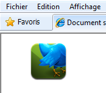
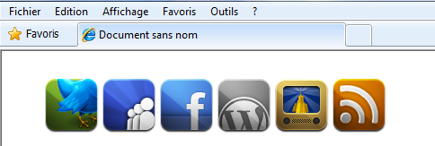

Les sprites CSS sont une façon de se servir d'une seule et même image qui en « contient » plusieurs, en n'affichant que ce qui nous intéresse. Les avantages de cette technique sont multiples, comme nous allons le voir.
C'est une technique qui consiste à regrouper plusieurs images en une seule et à ne sélectionner que la zone que l'on veut afficher. Cette technique a été très utilisée dans les jeux vidéos à l'époque des jeux 2D, par exemple ceux où vous cassiez des briques avec un plombier bedonnant en salopette ou un hérisson avec des tennis rouges... En fait, chaque personnage ou objet avait sur une même image toutes les positions nécessaires à son animation, et une seule petite zone était affichée, dans laquelle « défilait » le reste des images selon les actions du joueur. Eh bien en webdesign, c'est un peu pareil, et c'est ce que nous allons voir maintenant.
Cela va probablement chambouler un peu vos habitudes de découpage d'un design, et vous amener à réfléchir au meilleur moyen de les préparer. Concrètement, par exemple pour avoir un ensemble d'icônes faites avec des images qui changent au survol de la souris, vous auriez fait autant d'images que de possibilités :
Pour la suite du tutoriel, on va les fusionner comme ceci et utiliser cette image :
Mais quel intérêt y a-t-il ? C'est moins pratique en CSS ! Et puis charger une grosse image, ça prend plus de temps qu'une petite, non ?
Songez à ceci : la grande image fait 68 ko, chaque petite fait 12 ko. Donc, d'un côté on chargera une fois 68ko, et de l'autre on chargera douze fois 12 ko, soient... 144 ko. Mais ce n'est pas tout : à chaque fois que vous allez devoir charger une image, le serveur doit effectuer une requête HTTP pour récupérer l'image et l'afficher, soit un aller-retour. En n'ayant qu'une seule image, vous économisez de nombreux allers-retours. Certes cela paraît minime, mais imaginez que vous ayez des centaines de milliers de visiteurs uniques par jour ! o_O
De plus, dans le cas d'un élément qui change d'image au survol, vous êtes certain qu'il n'y aura pas de latence au moment du survol : le site n'aura pas à aller demander l'image et à la charger, puisqu'elle a déjà été chargée et mise en cache.
Chaque point de la liste sera donc une icône. Vous n'êtes évidemment pas obligé d'utiliser des listes.
Comme elles sont toutes de même taille, on applique une classe « icone », la même pour toutes afin de ne pas répéter les mêmes éléments à chaque fois, et ne pas avoir à toutes les modifier en cas de changement :
/* Cibler les éléments <li> appartenant à un élément de classe "icone" */
.icone li
{
width: 60px;
height: 60px;
display: inline-block;
background: url("sprite.png") no-repeat;
}
Qu'avons-nous fait pour l'instant ? Nous avons simplement dit que chaque point de la liste sera un bloc en ligne de 60 pixels de hauteur et de largeur, et qu'il aura une image de fond. Pour éviter tout problème, on peut lui appliquer la propriété no-repeat.
Maintenant, c'est là que les choses se corsent (mais pas beaucoup, promis :p ). On va appliquer des classes avec un background de notre image, en leur indiquant la position, au moyen de... ? De ?
background-position
Voyons ce que ça donne dans la pratique, pour l'icône de droite seulement :
.icone-1 { background-position: left top; }
Voici le résultat :

Qu'est-ce qui s'est passé précisément ? Il n'y a rien de particulier...
Revoyons un peu le code. On a gardé la même image de background qu'initialement, et on lui a simplement donné une position. L'image est affichée à partir de son bord gauche et de son bord haut (left top). Comme on a dit que la liste avait une largeur et une hauteur de 60 pixels, le reste de l'image au-delà de ces 60x60 n'est pas affiché, on a donc exactement ce qu'on voulait. Sauf qu'on ne s'en rend pas bien compte car on n'a qu'une image pour l'instant, mais nous allons arranger ça très vite.
Maintenant, on va passer à la partie intéressante... :pirate:
On voulait peindre le plafond, je vous ai donné l'échelle, je vous ai placé dessus, je vous ai donné la peinture. Maintenant, accrochez-vous bien au pinceau : j'enlève l'échelle ! :diable:
Allez, vous allez voir que c'est tout simple. Vous avez même peut-être déjà compris ! Revoyons l'action ralentie au magnétoscope :
.icone-2 { background-position: 20% top; }
On a donc déplacé notre image de 20 % vers la droite, comme dans l'image suivante. Comme l'image est régulière et le nombre d'icônes de 6, faire le déplacement en pourcentage est aisé : il y a en tout cinq déplacements à faire, d'un seul bloc à chaque fois. 1/5 = 20 %. ^^
Explication
Ainsi, au fur et à mesure, on peut placer notre image où on le souhaite, et comme on a toujours la taille de 60px*60px à partir du point défini, on a l'illusion qu'il n'y a qu'une seule image.
Faites bien attention, là encore j'aurais pu utiliser 0px en lieu et place de left et -300px au lieu de right. ;)
Alors, quelle est la différence entre l'utilisation des % et des pixels ?
Il n'y a pas vraiment de différence, mais des avantages et des inconvénients inhérents à chaque méthode. Voyons deux cas :
vous souhaitez ajouter une icône supplémentaire ;
vous souhaitez changer la taille des icônes.
Dans le premier point, si vous avez utilisé les valeurs en pixels, vous n'aurez qu'à ajouter cette image à la suite en rajoutant une classe « icone-7 » avec un décalage de 60px de plus que la précédente. Si vous utilisiez les %, il va vous falloir tout réajuster.
Dans le second point, si vous avez utilisé les valeurs en pourcentage, vous n'aurez qu'à changer la taille dans la classe « icone », et ne plus toucher à rien. En revanche, si vous utilisiez des valeurs en pixels, il va vous falloir tout recalculer pour l'ensemble de vos classes « icone-X ».
De plus, dans le cas où nous aurions plusieurs images fusionnées de différentes tailles, il pourrait arriver que le pourcentage ne soit pas assez précis.
Voyons où nous en sommes :

Voilà, maintenant que vous avez digéré ça, faites quelques essais. On va passer au morceau final, somme toute assez simple une fois ceci compris.
En fait, la gestion du survol de la souris va être toute simple à partir de ce qu'on a déjà fait. Comme un code vaut mieux qu'un long discours, voici : :-°
Alors qu'avons-nous fait ? Grâce à la pseudo-classe :hover, on peut agir sur l'action du survol de la souris sur l'élément. On a donc tout simplement remplacé top par bottom pour afficher le bas de chaque position d'icône. Ainsi, on a donc tout un menu en icônes, dynamique, avec une seule image. Il suffirait d'y rajouter des liens, je vous laisse le soin de faire ce que vous voulez. ;)
Il va donc vous falloir faire attention, et penser à regrouper vos images à répéter suivant leur sens. Pour répéter vos images horizontalement avec un repeat-x, vous devez placer vos images verticalement et jouer sur le placement en hauteur :
À l'inverse, pour répéter vos images verticalement avec un repeat-y, vous devrez concevoir vos sprites horizontalement :
Voilà pourquoi il est important de bien réfléchir à l'organisation de vos sprites. ;)
À noter que Google utilise une autre technique : ils mettent le fond de leur bouton au bas de leur image en prenant toute la largeur, afin de pouvoir répéter l'image sur l'axe x.
J'ai eu quelques demandes et questions concernant les possibilités d'utilisation des sprites. Des questions qui peuvent paraître simples à certains, mais que je vais quand même aborder ici pour que tout le monde trouve son bonheur. ;)
Comment puis-je utiliser la méthode des sprites avec des liens, pour faire un menu ?
Comment puis-je afficher du texte par-dessus mes images ?
Le principe des sprites peut être appliqué sur n'importe quel élément. Si vous souhaitez faire des liens cliquables dont le fond change au survol, comme sur le Site du Zéro, il faut appliquer nos classes à la balise du lien, comme suit :
Voici notre image (certes un peu moche :-° ... Mais c'est pour l'idée) :
Voyons donc le code CSS :
.menu {
margin: 0;
padding: 0;
list-style: none;
}
.menu li {
float: left;
width: auto;
}
.menu li a {
display: block;
width: 140px;
height: 40px;
line-height: 40px;
text-align: center;
background: url("mon-image") no-repeat 0 top; /* On positionne l'image en haut */
}
.menu li a:hover {
/* On affiche seulement la portion de l'image voulue : le bas */
background-position: 0 bottom;
}
De cette manière, vous constatez que comme on applique l'image en background sur un élément, on peut parfaitement y afficher du texte et utiliser les liens normalement.
En effet, utiliser les sprites avec un lien de type image et non texte reviendrait à avoir un lien vide :
<a href="mapage.html"></a>
Sur ce code, on appliquerait nos backgrounds et l'effet de positionnement au survol. Mais créer un lien vide en HTML n'est pas une bonne chose, pour des questions d'accessibilité.
Mais pourquoi ? Comme on le stylise en CSS, on peut quand même le voir et cliquer dessus, non ?
Certes, mais songez que certains internautes sont contraints de naviguer avec l'affichage des CSS désactivé, ou des lecteurs d'écrans. C'est le cas des personnes malvoyantes. Pour eux, le résultat sera sans appel : un lien vide qui n'affiche rien, et qui n'est donc pas cliquable. En conséquence, il devient impossible de naviguer sur votre site. C'est pour cela qu'il faut utiliser une image dans le HTML.
Mais le problème sera le même avec une image dans le HTML : si un utilisateur est malvoyant, il ne la verra pas !
Et c'est là le rôle de l'attribut alt, qui est obligatoire dans la balise <img />. En effet, dans le cas où une image ne serait pas chargée pour une raison ou une autre (erreur de connexion, lecteur d'écran...), c'est la description contenue dans l'attribut alt qui sera affiché ! Ainsi, le lien reste toujours cliquable. Pensez donc toujours à remplir cette balise consciencieusement.
Nous allons évidemment devoir apporter quelques modifications. Nous aurons également besoin des images "découpées" des versions non-survolées, afin de les mettre dans le HTML :
Pour commencer, nous allons mettre chacune de ces images (que nous aurons nommées intelligemment) dans notre html, accompagné de liens :
Comme vous pouvez le constater, on place la version "survolée" des images en fond. Si l'on regarde le résultat maintenant, nous verrons juste nos images originales en HTML. Il ne reste qu'à leur dire de se masquer au survol de la souris, pour voir se révéler nos backgrounds CSS !
/* Masquer les images contenues dans le lien survolé */
.icone a:hover img { visibility: hidden; }
C'est tout ! De cette manière, nous avons répondu à la problématique qui se posait, de manière efficace, sans Javascript, totalement fonctionnel pour tout le monde, ceux qui affichent le CSS, et ceux qui ne l'affichent pas !
Variantes
Dans le cas où l'image du dessus (celle en HTML) serait transparente, on peut aussi également masquer/afficher l'image de fond grâce à la propriété background-position.
Dans son état "normal", on masque l'image en la déplaçant à l'intérieur de son conteneur :
.icone li
{
width: 60px;
height: 60px;
display: inline-block;
background: url("sprite.png") no-repeat 0 -80px;
/* Ajuster la valeur en fonction de vos besoins */
}
Il ne reste donc qu'à appliquer les valeurs de position correcte au survol :
De cette manière, le problème de transparence avec les images peut-être simplement résolu ! :)
Voilà, j'espère que ce tutoriel vous a plu et que vous avez tout bien compris. À vous de faire vos propres sprites !
Pour conclure, voici un petit site pour vous aider à créer vos sprites : Spritegen, ainsi qu'un autre pour optimiser la taille de vos images en les compressant sans en dégrader la qualité : Smush.it.
Si vous avez des questions, des conseils ou des problèmes, vous pouvez me contacter via un MP ou commenter ce tuto. Bon code à tous les Zéros !